Collaborative Document Markup
For users of Process Director v5.13 and higher, document attachments may be annotated using Collaborative Document Markup.
 Collaborative Document Markup is a separately licensed component that may not be available for all installations of Process Director. This feature also requires that the Process Director server has the 64-bit version of the Microsoft Visual C++ runtime library installed. The library can be obtained from Microsoft's web site.
Collaborative Document Markup is a separately licensed component that may not be available for all installations of Process Director. This feature also requires that the Process Director server has the 64-bit version of the Microsoft Visual C++ runtime library installed. The library can be obtained from Microsoft's web site.
Please see the documentation for the ShowAttach control to see how to enable Collaborative Document Markup for attachments. Assuming that Review Permissions are enabled, Collaborative Document Markup will enable the user to add comments, callouts, and other annotations for the following document types:
- DOC/DOCX
- XLS/XLSX
- PPT/PPTX
- TXT/CSV
- PDF
Once enabled, when a user clicks the Review link for the attachment, the attachment will be opened in a new window for the Collaborative Document Markup interface for display and/or editing.
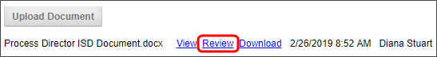
While the document itself can't be edited directly, a number of marking, annotation, and commenting features can be used and saved with the document.
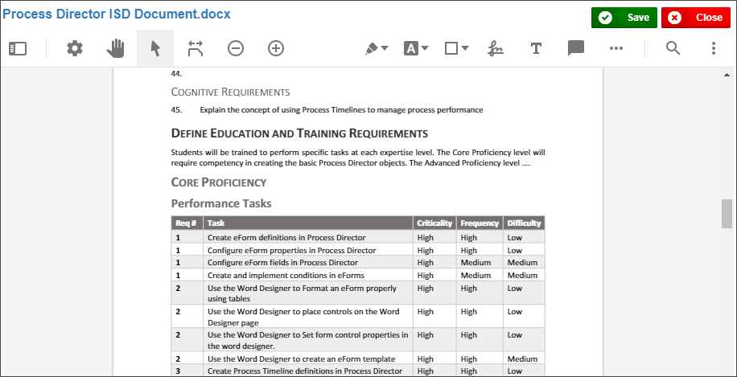
Markup Tools #
A number of tools are available to annotate the document, and these tools are displayed in the toolbar at the top of the page.
|
|
Panel |
The panel tool shows or hides the information panel, which will appear on the left side of the document window.
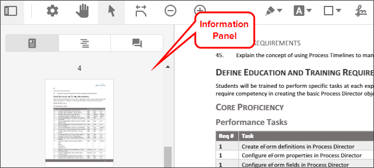
The information panel has three different display modes, which can be selected from the buttons at the top of the panel.
-
Thumbnails will display thumbnail images of each page of the document, which is useful for navigating quickly through long documents. In the example shown above, Thumbnails is the selected mode.
-
Outlines will display the PDF outline of the document, if applicable, which is, again, useful for navigating large documents.
-
Annotations will display any annotations that have been added to the document.
|
|
|
View Controls |
Clicking this tool displays a dropdown menu with some tools to determine how you'd like the document to display.
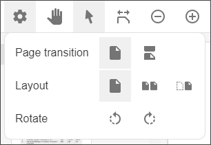
Page Transition enables you to select how to display the page transition for multi-page documents.
Layout enables you to select the reading layout for the document.
Rotate enables you to rotate the document clockwise or counter-clockwise.
|
|
|
Pan |
Enables you to use the mouse to click and drag the displayed document when the view is zoomed in. |
|
|
Select |
Switches to the standard mouse cursor, turning off all Markup controls. |
|
|
Fit |
Changes the page display size to switch between fit to width or fit to page. |
|
|
Zoom Out |
Zooms the page display out. |
|
|
Zoom In |
Zooms the page display in. |
|
|
Freehand |
Enables you to choose a pen color to make freehand ink markings with a freehand pen, using the mouse.
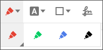
|
|
|
Text Tools |
Enables you to select a number of text marking tools to highlight, underline, or strikeout text in the document.
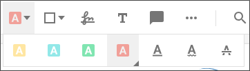
|
|
|
Shape Tools |
Enables you to add different drawing shapes, lines, or arrows to the document.
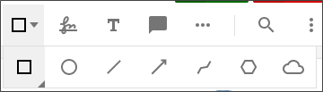
|
|
|
Signature |
Enables you to use a signature control that you can use to sign with the mouse to place the signature on the document. Clicking the lower right corner of the tool also opens a pen menu from which you can choose the pen color, opacity, and thickness.
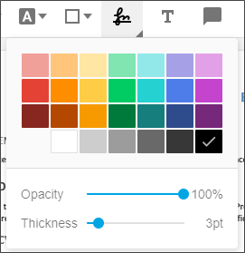
Once you select the tool and its settings, simply click on the document where you'd like the signature placed. A signature control window will open that enables you to use your mouse to add a signature.
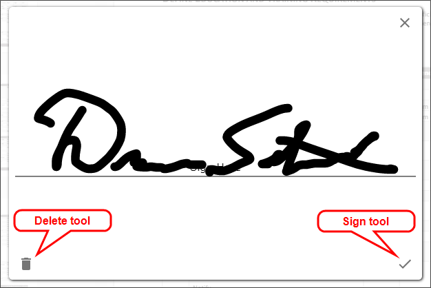
If you're dissatisfied with the signature, and want to start over, clear the signature by clicking on the Delete tool. When you're done, click the Sign tool to place the signature on the document.
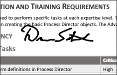
|
|
|
Free Text |
This tool enables you to place a free-standing text box on the document. Clicking the lower right corner of the tool also opens a menu from which you can choose the properties of the text box.
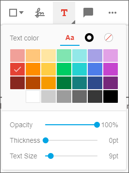
|
|
|
Comment |
Enables you place a comment annotation on the document. Once this tool is selected clicking anywhere on the document will place a comment marker at that location. You can add the text for the comment in the Comment box that will appear in the information panel.
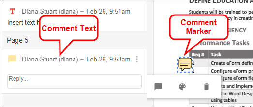
Clicking the lower right corner of the tool also opens a menu from which you can choose the properties of the comment.
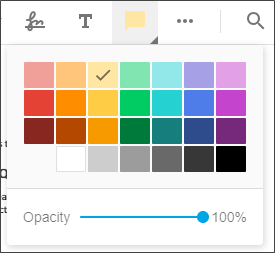
|
|
|
Misc Tools |
Opens a submenu to display the Callout and Stamp tools.
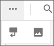
|
|
|
Callout |
Enables you to draw a callout box on the document.
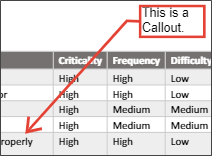
Clicking the lower right corner of the tool also opens a menu from which you can choose the properties of the callout box.
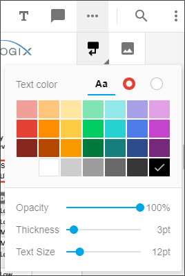
|
|
|
Stamp |
Enables you to select an image to place on the document. Clicking on the document opens the Browse dialog box, from which you can navigate to and select the desired image. Clicking the lower right corner of the tool also opens a menu from which you can choose the opacity of the image.
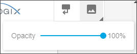
|
|
|
Search |
Enables you to search the document's text.
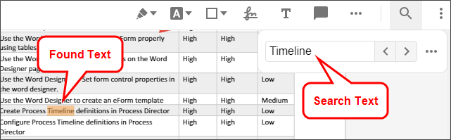
|
|
|
Menu |
Opens a menu to enable you to display in full-screen mode, or to print the document.
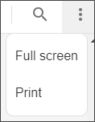
|
Using the Markup Tools #
To use any of the Markup tools, simply click on the tool you want to use. Many tools also have submenus where you can change specific properties of the tool, such as color, thickness, etc., as described above. Once you select the desired tool, the mouse cursor will show as a set of crosshairs to use in determining where to place the object. Simply, click on the place in the document where you'd like to place the tool. The appropriate object will be placed in the location where you click. You can then add text, or draw the desired item, as required.
Once an object has been placed in the document, you can go back to edit or delete the object by clicking on the Select tool to activate it., then clicking the object. When you click on the object using the Select tool, the object will become highlighted for editing, and a small edit menu will appear.
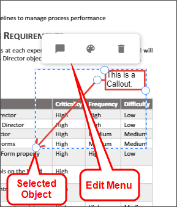
The edit menu provides three options for editing.
|
|
Comment |
Add a comment to the object in the Information Pane. |
|
|
Style |
Open the style menu to change the style of the object. |
|
|
Delete |
Delete the object. |
Text Markups can be edited directly by double-clicking on them, then editing the text.
Once you are done reviewing the document, click the Save button to save your changes. If you are making a lot of Markups, you may want to save periodically to ensure that you don't lose your changes should the browser window be inadvertently closed. To close without saving your changes, click the Close button, then confirm that you want to close without saving in the confirmation dialog box.